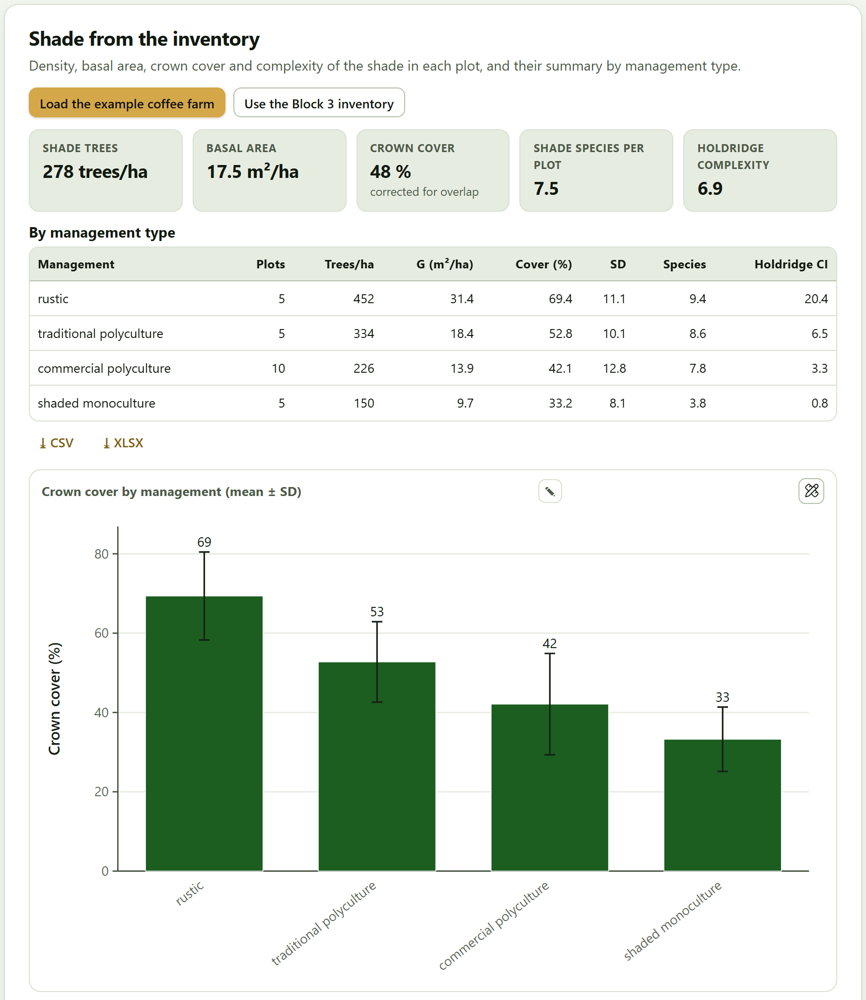
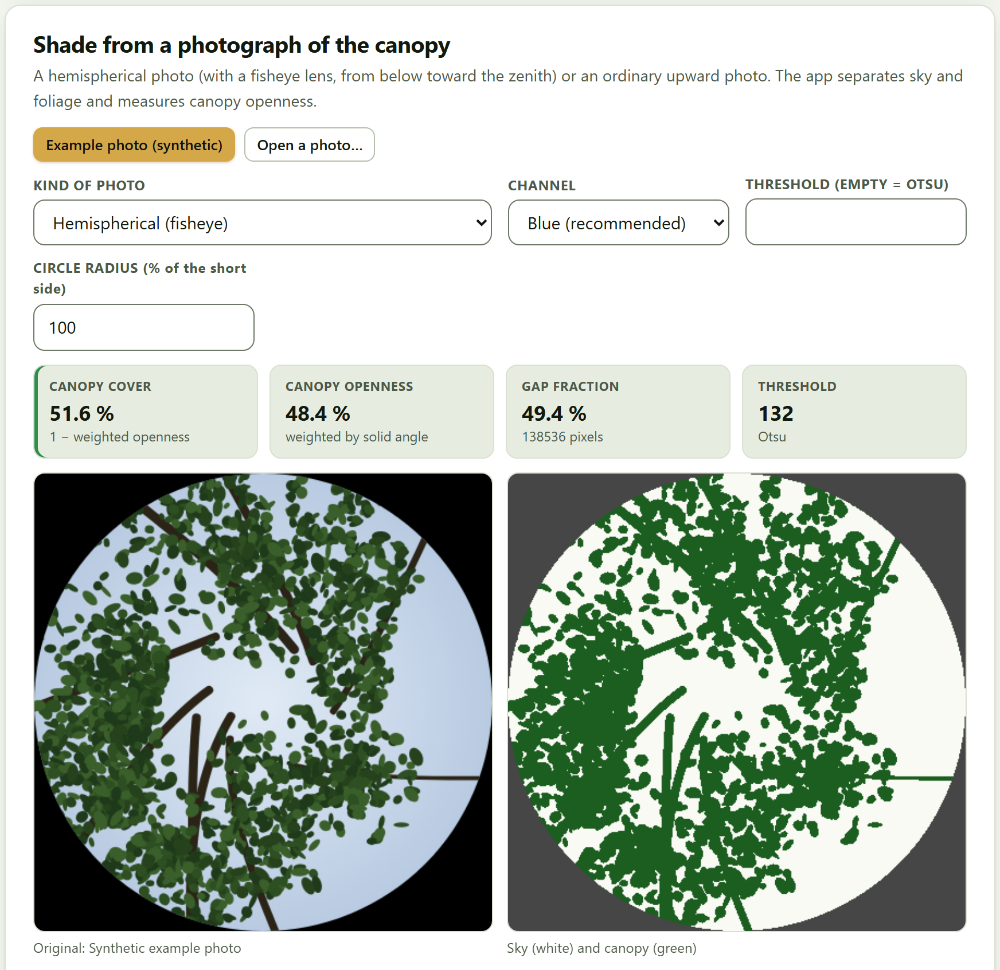
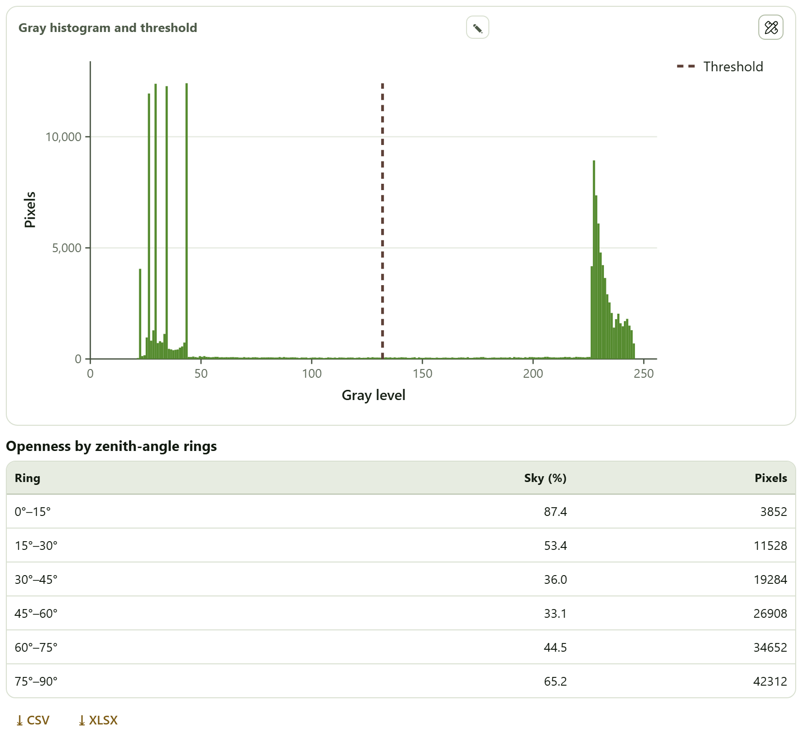
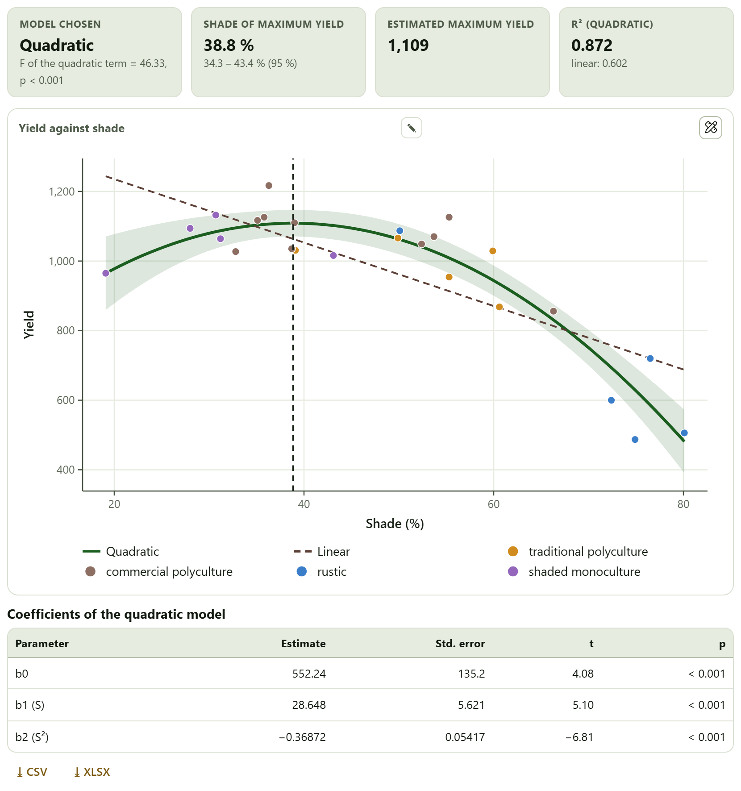
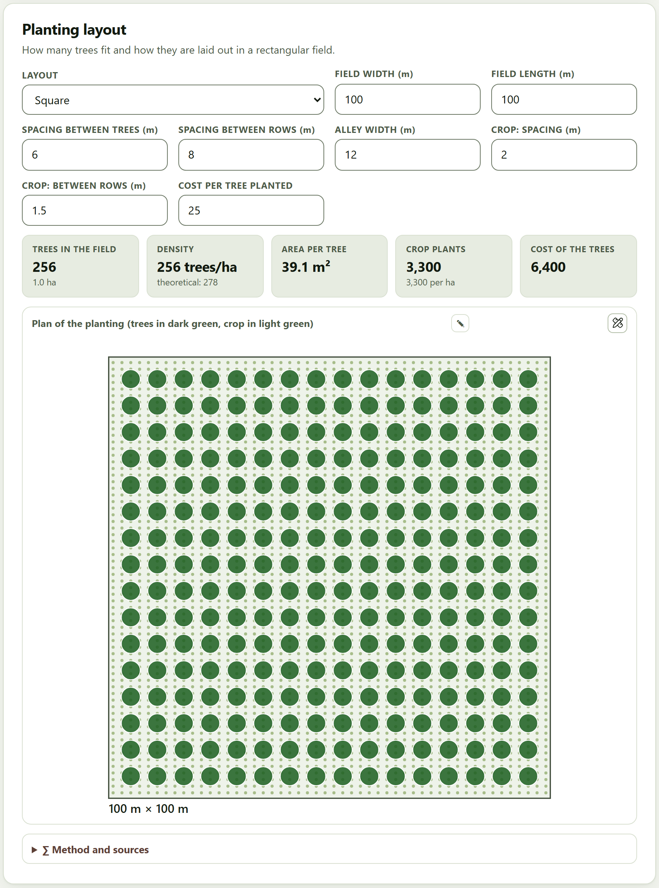
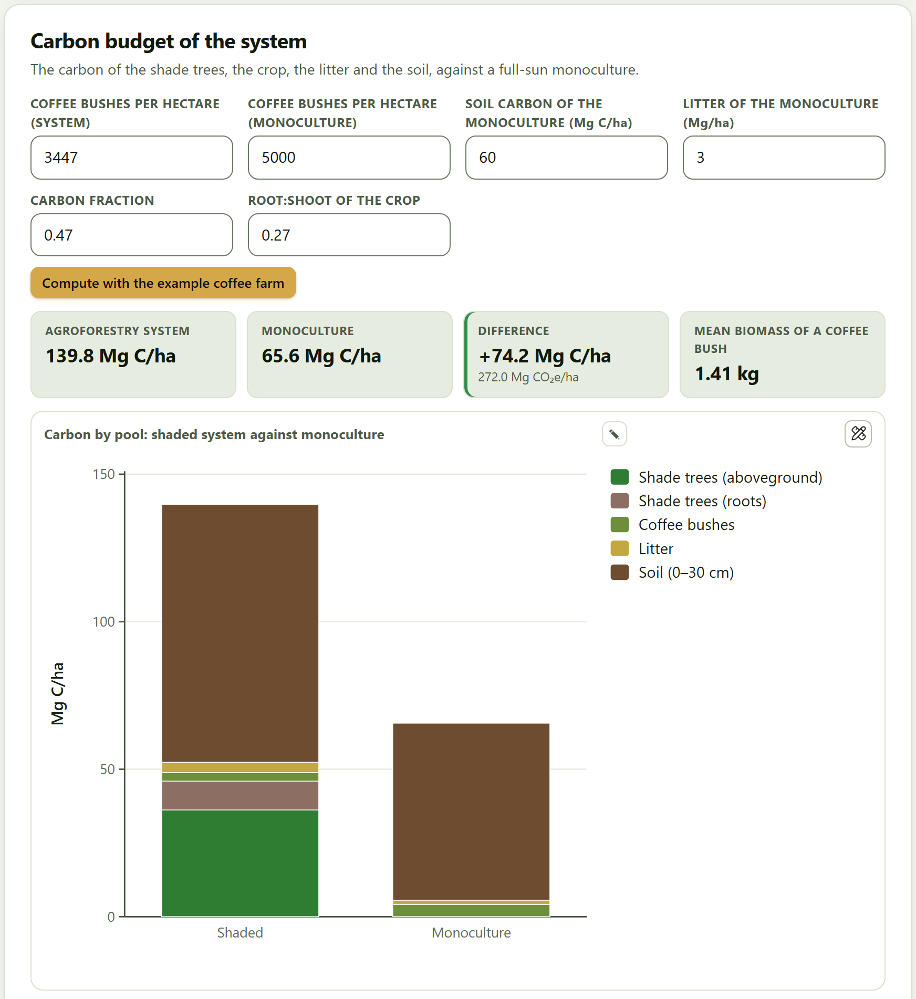

On a coffee farm the trees are not the harvest, but they decide much of it: they give shade, store carbon and sustain diversity. This block measures the shade—by counting the trees of the inventory or with a photograph of the canopy—, looks for the shade at which the crop yields most, draws the layout of a new planting and compares the carbon of the system with that of a full-sun monoculture.
Open the block with Block 7›Agroforestry systems. Its line on screen reads “Shade of coffee farms (by inventory or by hemispherical photograph), shade and yield, planting layouts and carbon budget.” It is designed for coffee and other shaded crops, and its five cards are independent: each has its own example button. The Open in Agroforestry button of the coffee farm on the home page (Section I.7) fills them all at once: it loads the coffee farm inventory in Block 3, computes the shade, reads the 25 plots of shade and yield, analyzes the synthetic photo and builds the carbon budget. The figures in this chapter are those of that example.
If the inventory has the crown diameter of each shade tree, the app computes for each plot the density, the basal area, the crown cover, the richness of shade species and a complexity index, and summarizes them by management type.
The card has no data card of its own: it reads the Block 3 inventory. Load the example coffee farm loads the coffee farm in Block 3 and comes back here; Use the Block 3 inventory takes the one already loaded. Live trees count, with the area of each plot according to its design, and the group of each plot (its stratum or its cluster) serves as the management type. If no tree has a crown diameter, the app warns that cover cannot be computed and suggests the photograph (Section 7.2).

The five tiles are plot averages. If there is more than one management type, the table By management type gives for each one the plots, trees per hectare, basal area, cover with its standard deviation, species and Holdridge index, sorted from most to least cover, and the chart Crown cover by management (mean ± SD) draws the mean cover of each management type with its standard deviation. Below, the table By plot also gives for each plot the sum of the crowns (Σ crowns (%)) and the mean height.
| Management | Plots | Trees/ha | G (m²/ha) | Cover (%) | Species | CI |
|---|---|---|---|---|---|---|
| rustic | 5 | 452 | 31.4 | 69.4 | 9.4 | 20.4 |
| traditional polyculture | 5 | 334 | 18.4 | 52.8 | 8.6 | 6.5 |
| commercial polyculture | 10 | 226 | 13.9 | 42.1 | 7.8 | 3.3 |
| shaded monoculture | 5 | 150 | 9.7 | 33.2 | 3.8 | 0.8 |
Each crown takes up π·c²/4, with c its diameter. The sum of the crowns over the area of the plot can exceed 100% because crowns overlap: plot P14 adds up to 152%. If crowns are placed at random, the share of the ground under at least one crown is C = 1 − exp(−Σa/A) (Crookston and Stage 1999): with 152% of crowns, 78.0% of the ground is covered. The Holdridge complexity index (Holdridge et al. 1971) multiplies species × trees × basal area (m²) × mean height (m) / 1000, with trees and basal area scaled to 0.1 ha; it grows fast with structure, which is why it separates traditional from simplified managements so well (Moguel and Toledo 1999).
When the inventory has no crowns, or to measure the shade at one point, a photo of the canopy taken from below is enough: the app separates sky from foliage and measures the openness.
Open a photo… reads an image from your computer (the photo does not leave it; if it is large, it is reduced to 640 pixels per side for the computation). Example photo (synthetic) draws a test hemispherical photo under a shade canopy. The controls are:

The tiles give the Canopy cover, the Canopy openness (only with the hemispherical photo), the Gap fraction with the pixels counted, and the Threshold, with “Otsu” or “manual.” With the ordinary photo, cover is 1 − the sky fraction. Below come the Gray histogram and threshold and, for the hemispherical photo, the table Openness by zenith-angle rings, with the visible sky in 15° rings.

Otsu’s (1979) threshold is the one that maximizes the variance between the two classes of the histogram. In an equiangular lens, a pixel at distance ρ from the center of a circle of radius R looks at the zenith angle θ = 90°·ρ/R. The gap fraction counts all pixels equally; the canopy openness weights each one by the solid angle it stands for (sin θ/ρ), which in an equiangular lens decreases from the zenith to the horizon: a pixel next to the horizon is worth 0.64 of one next to the zenith (Jonckheere et al. 2004; Frazer et al. 1999). That is why the two differ: in the example, the 75°–90° ring, with 65.2% sky and 42,312 pixels, weighs less in the openness than in the gap fraction, and the openness (48.4%) falls below the gap fraction (49.4%).
Under an evenly overcast sky, at dawn or at dusk, without direct sun in the frame, at the same height above the ground (above the crop) and with the camera leveled. Always check the segmented image: if the sun or the bright sky between leaves is misclassified, type the threshold by hand. One photo describes one point; for the plot, average several.
At what shade does the crop yield most? The card fits the regression of yield on shade, linear and quadratic, picks the better one and, if the curve has a maximum, gives the shade of maximum yield with its interval.
The data card asks for Shade (%) * and Yield * of each plot, and optionally Plot and Group (management), which colors the points. At least 5 plots are needed. The example, Coffee farm: 25 plots, has the measured shade and the yield of parchment coffee (kg/ha) of each plot. The shade can come from Section 7.1, from the photos of Section 7.2 or from any other measurement.

The tiles give the Model chosen, with the F test of the quadratic term; the Shade of maximum yield with its interval; the Estimated maximum yield; and the R² (quadratic) next to the linear one. The chart Yield against shade draws both curves—the quadratic with its 95% confidence band for the mean—and a vertical line at the shade of the maximum. The table Coefficients of the quadratic model gives b0, b1 and b2 with their standard error, t and p: in the example, b1 = 28.648 and b2 = −0.36872.
Both regressions are fitted by ordinary least squares; the F test of the quadratic term and the AIC decide the model. If b₂ < 0, the parabola has a maximum at S* = −b₁/(2b₂): in the example, −28.648/(2 × −0.36872) = 38.8%. Its standard error comes from the delta method, with the gradient (−1/(2b₂), b₁/(2b₂²)) applied to the covariance of b₁ and b₂ (Weisberg 2014). The bell shape is the one observed on coffee farms: with little shade the coffee plant is stressed and with much shade it lacks light (Soto-Pinto et al. 2000).
The interpretation says the curvature is significant if the quadratic term has p < 0.05; otherwise it warns that “the data do not tell an optimum from a linear trend.” If the curve has no maximum (b₂ ≥ 0), it says so and gives no optimal shade.
For a new planting: how many trees fit in a rectangular field with a given layout and spacing, how many per hectare, how much they cost and how they share the field with the crop.
The card reads no data; it draws the plan as soon as the block opens, with the default values, and redraws it with each change. Layout offers Square, Triangular, Rectangular, Alley cropping, Live fence (perimeter) and Boundary rows (two sides). The other fields are Field width (m) and Field length (m) (100 and 100), Spacing between trees (m) (6), Spacing between rows (m) (8, for the rectangle), Alley width (m) (12, for alleys), Crop: spacing (m) and Crop: between rows (m) (2 and 1.5) and Cost per tree planted (25, in whatever currency you use).

The tiles give the Trees in the field (with the area in hectares), the Density per hectare with the theoretical one, the Area per tree, the Crop plants and, if there is a cost, the Cost of the trees. The plan is to scale: the trees in dark green and the crop in light green, on its own grid. The crop plants are counted over the whole field, as if the trees took no room from them.
| Layout | Trees | Theoretical (trees/ha) | m² per tree | Cost |
|---|---|---|---|---|
| Square | 256 | 278 | 39.1 | 6,400 |
| Triangular | 304 | 321 | 32.9 | 7,600 |
| Rectangular (6 × 8 m) | 192 | 208 | 52.1 | 4,800 |
| Alley cropping (12 m) | 128 | 139 | 78.1 | 3,200 |
| Live fence (perimeter) | 66 | — | 151.5 | 1,650 |
| Boundary rows (two sides) | 32 | — | 312.5 | 800 |
The positions are generated inside the field leaving half a spacing at the edges, so fewer trees fit in a finite field than in the infinite layout. The theoretical density is 10,000/a² for the square, 10,000/(a·b) for the rectangle, 10,000/(a²·√3/2) for the triangular layout—15.5% more trees than the square at the same spacing—and 10,000/(a·width) for alleys. The live fence puts a tree every a meters along the perimeter and the boundary rows, along the two long sides (Nair 1993; Evans and Turnbull 2004).
The initial plan, with the default values, does not mark the block as done and does not enter the Block 10 report as a result of its own; as soon as you change a field, it does.
How much carbon does the shaded coffee farm hold against a full-sun monoculture? The card adds up that of the shade trees, the coffee bushes, the litter and the soil of the coffee farm example and compares it with an assumed monoculture.
The card works with the tables of the coffee farm example, not with your own data: Compute with the example coffee farm runs the computation, and afterwards each change in the fields repeats it. The fields are Coffee bushes per hectare (system) (left empty, the app enters the mean density of the example plots, 3447), Coffee bushes per hectare (monoculture) (5000), Soil carbon of the monoculture (Mg C/ha) (60), Litter of the monoculture (Mg/ha) (3), Carbon fraction (0.47) and Root:shoot of the crop (0.27).

| Pool | Shaded | Monoculture | Difference |
|---|---|---|---|
| Shade trees (aboveground) | 36.2 | 0.0 | 36.2 |
| Shade trees (roots) | 9.8 | 0.0 | 9.8 |
| Coffee bushes | 2.9 | 4.2 | −1.3 |
| Litter | 3.5 | 1.4 | 2.1 |
| Soil (0–30 cm) | 87.5 | 60.0 | 27.5 |
| Total | 139.8 | 65.6 | 74.2 |
The aboveground biomass of the shade trees comes from the equations of Segura et al. (2006) for Inga and Cordia, from van Noordwijk et al. (2002) for banana and from Chave et al. (2014) with wood density for the other species; the roots, from the IPCC (2006) ratio for tropical mountains (0.27). The coffee bushes use the equation of Segura et al. (2006) with the diameter at 15 cm and the height, multiplied by the planting density and by 1 + root:shoot. Litter and soil (0–30 cm) come from the tables of the example. Carbon is biomass times the carbon fraction, and CO₂e, carbon times 44/12. Comparisons like this are the ones made on the coffee farms of Chiapas (Soto-Pinto et al. 2010).
The monoculture uses the mean biomass of the example coffee bushes at its own density and the soil and litter values you type. The difference of 74.2 Mg C/ha depends on them: with another soil carbon for the monoculture, it changes by the same amount. Replace them with measurements of a full-sun coffee farm in the same area before reporting the difference as additional carbon.
The interpretation says how much more the shaded coffee farm holds and in which pools most of the difference lies: in the shade trees and, if the soil of the coffee farm exceeds the assumed one, also in the soil.
| If the inventory has the crown diameter | then use the cover corrected for overlap, not the sum of the crowns, as the shade of the plot. |
| If there are no measured crowns | then measure the shade with photos of the canopy: several per plot, at the same height and under an overcast sky. |
| If the segmentation misclassifies bright sky or the sun | then type the threshold by hand instead of using Otsu’s. |
| If the quadratic term is significant and b₂ < 0 | then there is an optimal shade: report S* with its interval, not only the point value. |
| If the quadratic term is not significant | then the data do not tell an optimum from a linear trend; do not recommend a shade level with them. |
| If you are going to report the additional carbon of the system | then replace the monoculture assumptions with local measurements. |
These are guides for interpretation, not laws: the crop, the elevation and the management change the optimal shade and the carbon of each pool.
“Load an inventory in Block 3 or the example coffee farm.”: there is no inventory loaded; use Load the example coffee farm or load yours in Block 3.
Cover cannot be computed. The inventory has no crown diameter: match it in the tree card of Block 3, or use the photograph.
The cover from the photo makes no sense. Check the kind of photo (an ordinary photo treated as hemispherical loses its corners) and the circle radius, which must match the circle of the lens.
“At least 5 plots are needed.” in shade and yield, or the shade of the maximum does not appear: there are fewer than five plots with both values, or the curve has no maximum within the data.
The budget does not appear. It is computed only after you press Compute with the example coffee farm.